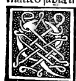

Chapter III: What Is Meant by the Name ‘Mathematical’ (The Quadrivium)¶
The Preface Being Ended, There Follows an Explanation of What Is Meant by This Name ‘Mathematical’

This word Mathematical, Most Exalted Duke, is Greek, derived from $\mu\alpha\theta\eta\mu\alpha\tau\iota\kappa\acute{o}\varsigma$ (mathematikos / $\mu\alpha\theta\eta\tau\acute{o}\varsigma$), which in our tongue signifies disciplinable (“capable of being taught and learned”). And for our purpose, by the mathematical sciences and disciplines are understood Arithmetic, Geometry, Astrology [Astronomy], Music, Perspective, Architecture, and Cosmography, together with every other science dependent upon these.
Nevertheless, the wise commonly take only the first four—namely Arithmetic, Geometry, Astronomy, and Music [the classical Quadrivium]—and call the others subalternate, that is, dependent upon these four. So hold Plato, Aristotle, Isidore in his Etymologies, and Severinus Boethius in his Arithmetic (De institutione arithmetica I.1).
Yet our own judgment—however weak and lowly it may be—compels us to reckon them as either three or five: namely Arithmetic, Geometry, and Astronomy, excluding Music from the four for as many reasons as they exclude Perspective from the five; or else adding Perspective to the aforesaid four for as many reasons as they add Music to our three.
If they say that Music satisfies hearing, one of the natural senses, Perspective satisfies sight—which is all the more noble inasmuch as it is the first portal to the intellect. If they say that Music attends to sonorous number (numerus sonorus) and to the measure imported into the time of its prolations, Perspective attends to natural number according to its every definition and to the measure of the visual ray (linea visuale). If the former refreshes the soul through harmony, the latter delights it greatly through due distance and variety of colors. If the former considers its harmonic proportions, the latter considers both arithmetic and geometric proportions.
In short, Most Exalted Duke, up to this very hour and for many years now this question has contended within my head, and no one has yet made clear to me why there should be four rather than three or five. Still, I judge that so many wise men do not err, even if their sayings do not uproot my ignorance.
Alas, who is there that, beholding a graceful figure well disposed with its due lineaments, to which nothing seems lacking save breath alone, does not judge it a thing rather divine than human? Painting imitates nature as closely as anything can possibly be said to do. This appears manifestly before our eyes in the aforesaid simulacrum of the ardent desire for our salvation [The Last Supper], wherein it is impossible to imagine the Apostles more alive at the sound of the voice of infallible Truth when He said: Unus vestrum me traditurus est (“One of you is about to betray me,” Matthew 26:21)—where with actions and gestures toward one another, in living and afflicted astonishment, they seem truly to speak, so worthily has our Leonardo disposed it with his graceful hand!
So too we read in Pliny concerning paintings (Natural History XXXV.65) about Zeuxis and Parrhasius: when they entered into a contest in the same art, challenging each other with the brush, Zeuxis painted a basket of grapes set among vine-leaves and placed it in public, whereupon the birds were deceived and flew down to peck at it as though it were real. Parrhasius then painted a linen curtain; and when he too had set his work in public, Zeuxis, believing it to be a real curtain covering his rival’s painting, said to Parrhasius: “Draw back the curtain and let everyone see your work, as mine was seen!”—and thus he was vanquished, confessing that whereas he had deceived birds, irrational animals, Parrhasius had deceived a rational being and a master of the art itself.
Perhaps, then, my great delight and supreme love for perspective (though I myself am unpracticed in the brush) does not deceive me; for universally there is no gentle spirit in whom painting does not awaken delight, seeing that it draws to itself both rational and irrational creatures alike. Wherefore I shall abide by this opinion until someone shows me otherwise: that there are either three principal mathematical sciences with the others subalternate, or else five if Music is numbered among them, since it seems to me that Perspective must on no account be placed behind it, being worthy of no less praise. And since this is no article of faith, I am certain I shall be indulged therein. Let this suffice concerning the meaning of the said name.